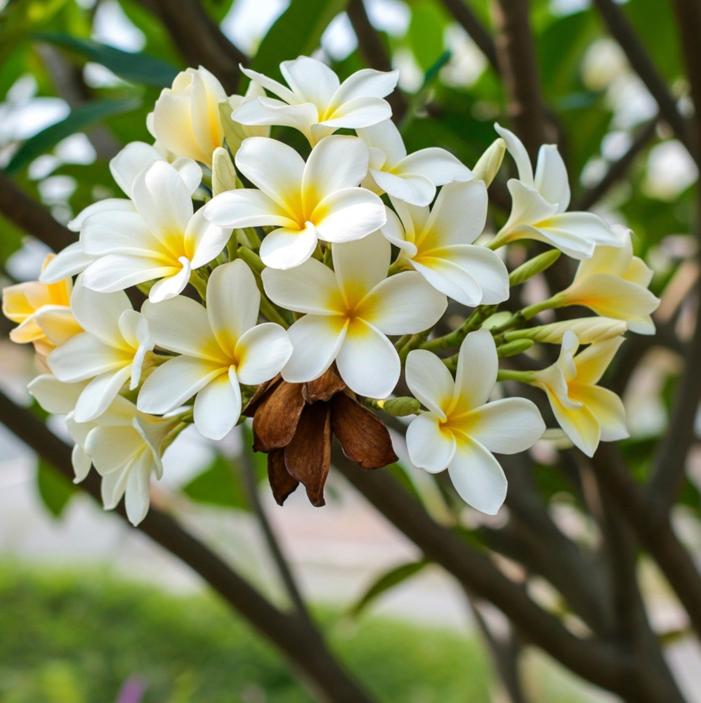

Frangipani is a beautiful tropical flowering plant known for its fragrant, soft-petaled flowers. It is commonly found in warm climates and is often planted in gardens, temples, and landscapes. Frangipani flowers are highly valued for their scent and decorative appearance.
Needs full sunlight (6–8 hours daily) for healthy growth and flowering.
Water moderately. Allow soil to dry slightly between watering.
Best growth at 22°C – 32°C. Prefers warm tropical climates.
Use well-draining sandy or loamy soil with good organic content.
Flowers bloom mainly during warm seasons with proper sunlight.
Used for decoration, landscaping, religious sites, and fragrance production.
Cause: Overwatering or poor drainage.
Solution: Reduce watering and improve soil drainage.
Cause: High humidity and poor airflow.
Solution: Improve ventilation and remove affected parts.
Cause: Common sap-sucking insects.
Solution: Use natural pest control or insecticidal soap.
Cause: Water stress or seasonal changes.
Solution: Maintain proper watering and care routine.
Cause: Lack of sunlight or nutrients.
Solution: Provide full sunlight and fertilize properly.